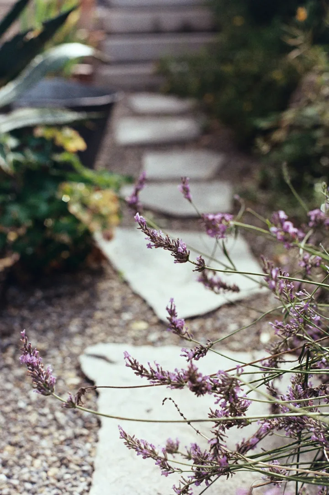

Regular garden care
Lawn mowing, edging, weeding, border care and routine hedge and shrub trimming, agreed around your garden’s needs.

Regular care, seasonal tidy-ups and upkeep for gardens across Surrey, Hampshire and Sussex.
You do not need a building project or a garden management subscription to use our maintenance service. Tell us what needs attention and we will agree the right approach for your garden.
Lawn mowing, edging, weeding, border care and routine hedge and shrub trimming, agreed around your garden’s needs.
Leaf clearing, cutting back and getting beds, borders and outdoor spaces ready for the season ahead.
Care for paths, patios, decking, gates and fencing. Cleaning, treatments or repairs are agreed and priced before work starts.
We agree the jobs, visit frequency, access arrangements and price before you commit. We also confirm what happens to garden waste and whether materials or specialist work are included.
Book a one-off visit or arrange regular care. If anything beyond the agreed work needs attention, we discuss it with you first.
For help coordinating several suppliers and planning future improvements, see ongoing garden management.

Latest monthly guide · September 2026
Autumn planting, dividing perennials, spring bulbs and planning for next year.
Explore the Garden JournalSend your location and a few details. Photos are useful if you have them.
Discuss maintenance